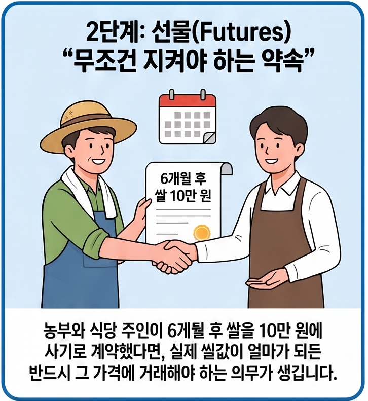

선물과 옵션
이 과정은 금융업종 기업이 아닌 IT 관련 업종의 이스트소프트 회사에서 개발자 양성 과정 중 퀀트 시스템 개발을 위한 금융 관련 지식을 포함한 커리큘럼의 과정입니다.
특정 금융기관 취업 및 해당 금융기관의 상품 소개·이용, 특정 시스템 사용에 대한 내용은 포함되어 있지 않습니다. IT 개발자로서 주식 투자 등의 업무 분석을 위한 과정입니다.
KDT·NCS에서 정의한 유관 업무 경력자인 강사가 IT 개발자로서 업무 분석 및 응용을 위한 과정을 진행합니다. 종목 추천, 특정 금융상품 소개·추천·가입 유도는 하지 않으며, 소개되는 각종 사이트와 회사는 분석을 위한 레퍼런스 및 개발 참고용입니다.
강사는 금융 관련 자격증 소지자나 특정 금융기관 종사자, 금융학자·경제학자가 아닙니다. 회사 운영 중 자산 운용 경험자로서 KDT 국비 과정에 맞는 다양한 사업 경험과 응용 가능한 오픈소스 기반의 IT 솔루션을 적용하도록 가이드하고, 관련 프로젝트 진행을 돕는 역할을 합니다.
예를 들어 특정 금융기관의 금융연구 기반 솔루션 개발을 위한 과정이라면, 해당 기관의 상품, 개발 방법론, 유상 소프트웨어 사용법, 각종 업무의 이해를 기반으로 커리큘럼이 만들어질 수 있습니다. 특정 은행이라면 이러한 조건을 바탕으로 신입사원 채용 후 교육을 거쳐 바로 업무에 투입하기 위한 별도 과정이 개설·운영되는 경우가 많습니다. 본 과정은 예시의 은행이 특정 목적으로 채용 후 시스템 사용 교육을 하는 기업별 PBT 과정이 아닙니다.
계약과 만기, 먼저 이해하기
계약은 두 사람이 “무엇을, 언제, 얼마에 어떻게 하자”라고 약속을 정리한 것입니다. 예를 들어 농부와 식당 주인이 “가을에 배추 1,000포기를 포기당 3,000원에 사고팔자”고 합의하면, 거래 대상·가격·날짜가 들어간 계약이 됩니다.
만기는 그 약속을 끝내고 정산하는 마지막 날입니다. 약속한 날이 오면 실제 물건을 주고받거나, 계약에서 정한 방식대로 가격 차이를 계산해 돈으로 정산합니다. 선물·옵션에서는 이 마지막 날과 정산 방식이 상품마다 미리 정해져 있습니다.
따라서 선물을 볼 때는 “오를까 내릴까”보다 먼저 무슨 계약인지, 만기가 언제인지, 실물인도인지 현금결제인지를 확인하는 것이 중요합니다. 수익률은 그다음에 보는 결과입니다.
수익률
수익률은 돈이 얼마나 늘어날 가능성이 있는지, 위험은 예상과 다르게 줄어들 수 있는 정도를 뜻합니다.
Return / Rate of Return은 수익률을 뜻하는 가장 흔한 표현입니다. 보통은 rate of return을 풀어 쓰거나 return이라고 합니다.
ROI (Return on Investment)는 더 자주 쓰이는 약어이지만, 원래 투자 비용 대비 순이익이라는 비교적 좁은 의미입니다. 따라서 모든 수익률을 ROI라고 부르는 것은 엄밀하지 않을 수 있습니다.
CAGR (Compound Annual Growth Rate)은 여러 기간에 걸친 연평균 수익률을 말합니다. Yield는 채권 이자나 배당처럼 정기적으로 발생하는 수익률을 가리킬 때 주로 씁니다.
1억 원으로 보는 수익률 시뮬레이션
기업과 개인이 각각 투자할 수 있는 돈 1억 원을 가지고 있다고 가정해 보겠습니다. 같은 수익률이라도 돈을 써야 하는 목적이 다르면 감당할 수 있는 손실과 투자 판단도 달라집니다.
아래 시뮬레이터에서 기업 또는 개인을 선택하고 예상 수익률과 기간을 바꿔 보세요. 수익률 숫자만 비교하지 말고, 손실이 생겨도 기업 운영이나 개인의 생활 계획에 문제가 없는지 함께 확인하는 방식으로 활용하세요.
기업·개인별 투자 목적을 선택하고, 수익률과 기간에 따른 예상 금액을 계산합니다.
유동성은 필요할 때 현금으로 바꾸기 쉬운 정도입니다. 수익률이 높아 보여도 급하게 돈이 필요할 때 팔기 어렵다면 내 상황에는 맞지 않을 수 있습니다.
“높은 수익률, 낮은 위험, 높은 유동성”을 동시에 모두 얻기는 어렵다는 점을 기억하세요.
헤지는 큰 손실을 줄이는 안전장치
헤지(hedging)는 예상과 다르게 가격이 움직여 생길 손실을 줄이기 위한 위험관리 방법입니다. 위험을 완전히 없애거나 무조건 돈을 버는 방법이 아니라, 손익이 한쪽으로 너무 크게 흔들리지 않게 완충하는 데 목적이 있습니다.
예를 들어 배추 농부가 가을 배추값 하락이 걱정돼 미리 일정 가격에 팔기로 선물계약을 맺는다면 헤지입니다. 시장가격이 떨어져도 수입 감소 위험을 줄일 수 있지만, 배추값이 크게 올랐을 때 얻을 수 있는 이익 일부도 포기할 수 있습니다.
국내의 KOSPI 200 선물·옵션과 해외의 나스닥100·원유·금 선물 등은 이런 헤지 용도로 쓰일 수 있습니다. 다만 계약 규모가 보유 자산과 맞지 않거나 구조를 이해하지 못하면 헤지가 아니라 위험 확대가 될 수 있으므로, ‘어떤 위험을 줄이는지’와 ‘최대 손실이 얼마인지’를 먼저 확인하세요.
기본 금융상품 지도
예금·적금은 안정성과 목적자금 관리에, 주식은 기업 성장에 참여하는 데 쓰입니다.
채권은 정부나 기업에 돈을 빌려주고 이자와 원금을 받는 구조입니다. ETF·펀드는 여러 자산을 한 상품에 담아 분산투자를 쉽게 합니다.
상품 이름보다 “무엇에 투자하는지, 비용은 얼마인지, 어떤 위험이 있는지”를 먼저 확인하세요.
주식·부동산·채권·금·가상자산의 구성비를 비교합니다.
파생상품은 “가격에서 나온 계약”입니다
파생(派生)은 “어떤 것에서 갈라져 나와 생긴다”는 뜻입니다. 파생상품은 주식·주가지수·금리·환율·원자재처럼 기준이 되는 대상의 가격 변화에 따라 가치가 달라지는 계약입니다. 기준이 되는 대상을 기초자산이라고 합니다.




예를 들어 KOSPI 200 선물은 KOSPI 200 지수 자체를 사는 것이 아니라, 그 지수의 미래 가격 변화와 연결된 계약을 거래하는 것입니다. 옵션은 미래에 정한 가격으로 사고팔 수 있는 권리를 거래합니다.
파생상품은 가격 변동 위험을 줄이는 헤지에 쓸 수 있지만, 가격 방향을 예상하는 거래에도 쓰일 수 있습니다. 계약 단위·만기·증거금 때문에 현물 주식보다 손익이 더 빠르게 커질 수 있으므로, 먼저 계약 구조와 최대 손실을 이해해야 합니다.
파생상품 개념 동영상으로 보기 NotebookLM으로 만든 요약 영상입니다 · 구글 계정 로그인이 필요할 수 있습니다.
배추 판매로 보는 선물 계약
배추 농부가 가을에 배추 1,000포기를 수확해 팔 예정인데, 가을 가격이 포기당 1,000원이 될지 6,000원이 될지 알 수 없다고 해 보세요. 농부와 김치공장이 지금 “가을에 포기당 3,000원으로 1,000포기를 사고팔자”고 약속할 수 있습니다.
배추 선물 계약, 그림으로 보기
여기서 실제 배추는 기초자산이고, 미래에 정한 가격으로 사고팔겠다는 약속은 배추 가격에서 파생된 계약입니다. 농부는 가격 폭락 위험을 줄이고, 김치공장은 가격 급등 위험을 줄일 수 있습니다.
가을 시장가격이 1,000원이면 농부에게, 6,000원이면 김치공장에게 이 약속이 유리합니다. 따라서 파생상품은 위험을 줄이는 데 쓸 수 있지만, 가격이 한쪽으로 크게 움직이면 상대방의 손실도 커질 수 있습니다.
TRADE VS FUTURES
가격과 수량을 바꿔 만기 청산 결과를 비교해 보세요.
현물과 선물: 지금 거래와 미래 계약
현물은 한자로 現物이며, 선물·옵션 같은 미래 계약이 아니라 지금 소유권을 사고파는 자산 또는 거래를 뜻합니다. 예를 들어 주식을 사면 결제 절차를 거쳐 그 회사의 지분이 전자적으로 내 계좌에 들어옵니다. 종이 주권이나 물건을 손에 받아야만 현물인 것은 아닙니다.
영어권 금융시장에서는 현물가격·현물시장을 보통 스팟 가격(spot price)·스팟 시장(spot market)이라고 부릅니다. 주식·채권처럼 파생상품이 아닌 자산을 선물과 대비할 때는 현금시장(cash market)이라는 표현도 씁니다. 그래서 주식 매수는 기업 지분 자체를 보유하는 현물 거래이고, 주식선물 매수는 그 주가 변화에 연결된 계약을 보유하는 파생상품 거래입니다.
다만 원유·금·곡물처럼 실제 물건의 인도까지 강조할 때는 실물자산(physical commodity·피지컬 커모디티) 또는 실물인도 (physical delivery·피지컬 딜리버리)라고 합니다. spot은 “지금 거래·결제하는 시장”이라는 뜻에 가깝고, physical은 “실물의 보관·운송·인도”를 강조하는 말이라는 차이가 있습니다.
선물은 미래 가격을 지금 약속하는 계약입니다. 실제 자산을 지금 받는 대신 가격 차이를 정산하는 구조가 많습니다. 현물은 보통 사려는 금액 전체가 필요하지만, 선물은 일부 증거금으로 거래하므로 적은 돈으로 큰 금액에 노출될 수 있고 손익도 빠르게 커질 수 있습니다.
선물은 미래 거래를 미리 정하는 약속
선물은 미래의 특정 날짜에 어떤 물건이나 자산을 미리 정한 가격으로 사고팔기로 하는 계약입니다. 이름에 “선(先)”이 들어가는 이유는 미래의 거래 조건을 지금 먼저 정하기 때문입니다.
현물 주식처럼 기업 지분이라는 물건 자체를 사는 것이 아니라, 지수·원유·환율 같은 기준 대상의 가격 변화에 따른 손익을 주고받는 표준 계약을 거래합니다.
예를 들어 A가 KOSPI 200 선물 1계약을 매도하고 B가 같은 계약 1계약을 매수해 주문이 체결되면 선물 계약 1개가 생깁니다. A는 지수가 내리면, B는 지수가 오르면 유리합니다. 거래소·청산기관이 양쪽 증거금을 관리하고 매일 손익을 정산합니다.
배추 농부와 김치공장이 “가을에 배추 1,000포기를 포기당 3,000원에 사고팔자”고 약속하는 모습을 생각해 보세요. 나중의 시장가격이 달라져도, 약속한 가격을 기준으로 거래하거나 차이를 정산합니다.
선물은 가격 변동 위험을 줄이는 헤지에 쓸 수 있지만, 가격 방향만 보고 거래하면 손실이 빠르게 커질 수 있습니다. 거래 단위·만기·증거금과 최악의 손실을 먼저 확인해야 합니다.
선물의 일일정산: 만기까지 손익을 미루지 않습니다
선물은 보통 만기일에만 손익을 계산하는 것이 아니라, 매 거래일 장이 끝난 뒤 그날의 정산가격을 기준으로 손익을 계좌에 반영합니다. 이를 일일정산 (일일 시가평가)이라고 합니다. 다음 날의 손익은 최초 진입가격이 아니라 전날 정산가격과 오늘 정산가격의 차이로 다시 계산합니다.
예를 들어 코스피200 선물 1계약을 보유한 상태에서 전날 정산가격이 340포인트, 오늘 정산가격이 342포인트이고 거래승수가 25만 원/포인트라면, 매수자는 2포인트 × 25만 원 = 50만 원을 받고 매도자는 같은 금액을 냅니다. 손실이 쌓여 계좌가 유지증거금 기준 아래로 내려가면 추가 증거금 납부를 요구받을 수 있으며, 채우지 못하면 포지션이 청산될 수 있습니다.
개인은 보통 증권사의 선물·옵션 거래계좌 예수금에서 정산 손익이 반영되고, 부족한 돈은 본인 명의의 연결 은행계좌에서 이체합니다. 기업은 임직원 개인 통장이 아니라 증권사에 개설한 법인 파생상품 거래계좌를 사용하며, 자금부서가 회사의 법인 운영·자금관리 계좌에서 필요한 증거금을 이체해 관리합니다. 정산 계산은 장 마감 뒤 이뤄지며 실제 반영·이체 가능 시각과 부족금 납부 마감은 증권사별 안내를 확인해야 합니다.
전일·오늘 정산가격과 계약 수를 바꿔 당일 손익을 확인해 보세요.
주문이 만나야 선물·옵션 계약이 생깁니다
선물이나 옵션은 한쪽의 주문만으로는 생기지 않습니다. 같은 계약을 사려는 주문과 팔려는 주문이 가격·수량 조건에서 만나야 체결됩니다. 예를 들어 어떤 사람은 지수가 오를 것이라 보고 선물 매수 주문을, 다른 사람은 내릴 것이라 보고 같은 선물 매도 주문을 낼 수 있습니다. 두 주문의 가격이 맞으면 계약이 하나 생기고, 오르면 매수 쪽이, 내리면 매도 쪽이 유리해집니다.
다만 항상 “한 사람은 상승, 다른 사람은 하락”이라고만 생각하면 좁습니다. 주식 보유자는 하락 위험을 줄이려고 선물을 매도할 수 있고, 기업은 원재료 가격 상승을 걱정해 선물을 매수할 수 있습니다. 즉 반대 주문은 서로 다른 전망 때문에 나오기도 하고, 이미 가진 위험을 줄이려는 헤지나 가격 차이를 이용하려는 거래 때문에 나오기도 합니다.
거래소에서는 서로의 이름을 보고 1:1로 상대를 골라 계약하지 않습니다. 투자자가 증권사 앱에 계약 종류·만기·가격·수량을 넣어 주문하면, 거래소의 주문장에 익명으로 쌓입니다. 시스템은 살 가격이 팔 가격과 만나는지 확인해 자동으로 체결합니다. 보통 더 높은 매수호가와 더 낮은 매도호가가 먼저, 같은 가격이면 먼저 들어온 주문이 먼저 처리됩니다.
예를 들어 ‘340.00에 1계약 매수’와 ‘340.00에 1계약 매도’가 주문장에 있으면 시스템이 이를 연결합니다. 매수 주문이 3계약이고 반대 주문이 여러 개라면 여러 주문과 나누어 체결될 수도 있습니다. 반대로 매수 339.95와 매도 340.00처럼 가격이 만나지 않으면 주문장에 남아 기다립니다. 체결 뒤에는 거래소·청산기관이 정해진 방식으로 결제와 증거금 관리를 맡으므로, 개인이 특정 반대편의 신원을 알아야 거래할 수 있는 구조가 아닙니다.
내가 낸 주문이 호가창에서 어떻게 체결·대기되는지 직접 확인하세요.
옥수수 선물: 항구·창고까지 이어지는 실물인도 예시
미국 옥수수 선물처럼 실물인도 방식인 상품은 만기까지 매수 포지션을 남기면 옥수수 조금이 집으로 배송되는 구조가 아닙니다. 대표 계약은 1계약이 5,000부셸(약 127톤)처럼 큰 표준 단위입니다. 이는 소매점에서 몇 봉지 사는 단위가 아니라 생산·유통·가공 업체가 가격 위험을 관리할 수 있도록 만든 도매 단위입니다.
증거금 100달러를 냈다고 해서 100달러어치만 받을 수 있는 것도 아닙니다. 증거금은 계약 전체 금액의 일부를 맡기는 보증금이며, 실제 물량 가격도 최대 손실 한도도 아닙니다. 선물은 작은 증거금으로 큰 계약 금액에 노출되므로, 가격이 불리하게 움직이면 추가 증거금 요구나 청산 손실이 생길 수 있습니다.
손실로 계좌가 유지증거금 아래로 내려가면 증권사는 추가 증거금을 요구할 수 있습니다. 정해진 기한에 입금하지 못하면 포지션이 강제청산될 수 있으며, 그때도 손실이 예치 증거금을 넘었다면 부족금은 남습니다. 즉 “증거금만 잃으면 끝”이 아니라 `손실 발생 → 추가 입금 요구 → 미입금 시 강제청산 → 남은 부족금 정산`의 흐름을 이해해야 합니다. 실제 기한·청산 기준·부족금 처리 방식은 증권사와 상품 약관에 따라 다릅니다.
손실부터 부족금 정산까지의 과정을 숫자로 바꿔 확인하세요.
예를 들어 식품회사가 옥수수 가격 상승을 걱정해 선물을 매수한 뒤, 인도 절차까지 포지션을 유지했다고 해 보세요. 인도가 배정되면 매수자는 계약 전체 대금을 내고 거래소가 정한 적격 곡물창고의 전자 창고증권 또는 선적증서를 받습니다. 이 증서는 그 창고에 보관된 규격·등급·수량의 옥수수를 인수할 권리를 나타냅니다.
그다음 실제 물류가 필요하면 증서를 취소하고 창고에 반출을 요청합니다. 옥수수가 내륙의 곡물 엘리베이터에 있다면 트럭·철도·바지선으로 수출 터미널이나 항구까지 옮긴 뒤 선박 운송을 별도로 계약할 수 있습니다. 보관료, 상·하차료, 내륙운송비, 항만·선박 비용, 보험, 통관·검역 등은 선물가격과 별개로 발생합니다. 인도 장소가 꼭 항구인 것은 아니며, 계약서에 정해진 지정 창고인지를 먼저 확인해야 합니다.
미국 창고의 증서를 받는 것과 그 옥수수를 한국에 들여와 판매하는 것은 별개입니다. 영리 목적 수입은 법인만 가능한 것은 아니지만 사업자등록과 사업자 통관 절차가 필요하고, 식용으로 수입·판매한다면 수입식품 관련 영업등록·수입신고와 해외 제조업소 또는 농산물 포장장소 등록을 확인해야 합니다. 식용·사료용·종자용에 따라 검역과 추가 요건이 달라질 수 있습니다.
따라서 실제 현물 사업에서는 식품회사·사료회사 등이 선물로 가격 위험을 관리하고, 수입식품 등록을 갖춘 무역·유통사 또는 관세사·물류회사와 수입·검역·통관을 나누어 진행하는 경우가 많습니다. 개인·단기 거래자는 보통 최초통지일이나 증권사가 정한 인도 위험 시점 전에 반대매매로 청산하거나 다음 만기로 옮깁니다. 실물인도와 현금결제는 다르므로, 주문 전 계약 단위·결제 방식·인도 장소·최초통지일·증권사 청산 규정을 반드시 확인하세요.
“만기 직전까지 포지션을 정리하지 못해 트럭에 실린 곡물이 집 앞까지 배송됐다”는 식의 이야기는 트레이딩 업계에 널리 떠도는 출처 불명의 무용담에 가깝고, 실제 인물·날짜·언론 보도로 확인되는 사례는 찾기 어렵습니다. 다만 만기까지 방치된 실물인도형 선물이 큰 손실로 이어진 사건은 실제로 있었습니다. 2020년 4월 20일 뉴욕상업거래소(NYMEX)의 5월물 WTI 원유선물은 실물 인수 부담과 저장공간 부족이 겹치며 배럴당 -37.63달러로 마감했습니다. 만기 전 포지션을 정리하지 못한 일부 투자자는 증거금을 넘는 손실을 봤고, 미국 증권사 인터랙티브 브로커스는 이 사태로 약 1억 930만 달러의 손실을 떠안았다고 밝혔으며, 이후 미국 상품선물거래위원회(CFTC)는 주문 시스템의 관리 부실을 이유로 이 회사에 175만 달러의 제재금을 부과했습니다. 곡물이 아닌 원유 사례이고 “물건이 배송됐다”가 아니라 “가격이 마이너스로 정산됐다”는 점은 다르지만, 실물인도형 선물을 만기까지 방치하면 안 되는 이유를 보여 주는 실제 사건이라는 점은 같습니다.
프리미엄과 증거금, 미리 구분하기
premium은 영어로 기본 가격에 더해 내는 돈, 또는 특별한 권리·보상에 붙는 대가라는 뜻입니다. 더 거슬러 올라가면 라틴어 praemium(상·보상)에서 온 말입니다. 보험료를 insurance premium이라 부르는 것도 같은 맥락입니다.
옵션 프리미엄은 옵션을 사는 사람이 “정한 가격으로 사고팔 수 있는 선택권”을 얻기 위해 내는 가격입니다. 예를 들어 1,000만 원어치 주식/ETF 하락을 대비하는 풋옵션의 프리미엄이 3%라면, 처음 내는 비용은 30만 원입니다. 시장이 안 떨어지면 이 돈은 비용이 되지만 크게 떨어지면 옵션의 이익이 손실 일부를 메울 수 있습니다. 상가 등의 권리금과는 다른 금융 용어입니다.
증거금은 선물 거래나 옵션 매도자가 계약을 지키기 위해 맡기는 보증금입니다. 손실로 유지 기준에 못 미치면 추가 증거금 요구나 강제청산이 생길 수 있습니다. 즉 프리미엄은 권리를 사는 가격이고, 증거금은 계약 이행을 위한 보증금이라는 점을 구분하세요.
만기와 청산: 계약을 끝내는 방법
선물·옵션은 영원히 이어지는 계약이 아니라, 거래소가 상품별로 미리 정한 마지막 거래일과 만기일이 있습니다. “몇 월물”이라는 말은 그 계약이 끝나는 달을 가리킵니다. 정확한 날짜와 결제 방식은 상품마다 다르므로 거래소의 상품명세에서 확인해야 합니다.
청산은 만기 전에 반대 거래를 해서 내 포지션을 0으로 만드는 것입니다. 선물을 샀다면 같은 계약을 팔아 청산하고, 선물을 팔았다면 같은 계약을 사서 청산합니다. 옵션도 사 둔 계약을 팔거나, 팔아둔 계약을 다시 사면 청산할 수 있습니다.
만기까지 계약을 남겨 두면 상품 조건에 따라 현금으로 가격 차이를 정산하거나, 옵션 권리가 행사되거나, 가치 없이 끝날 수 있습니다. 따라서 “언제 끝나는 계약인지, 만기 전에 청산할지 다음 만기로 옮길지”를 주문 전에 정리하는 습관이 중요합니다.
선물은 누구와 계약하고, 베팅일까요?
거래소 선물은 특정 사람과 이름을 알고 직접 약속하는 계약이 아닙니다. 매도 주문과 반대편의 매수 주문이 체결되면 거래소와 청산기관이 중간에서 증거금·손익정산·만기결제를 관리합니다. 쉽게 말해 “나 ↔ 거래소·청산기관 ↔ 반대편 투자자” 구조입니다.
반대편이 모두 투기 거래자는 아닙니다. 항공사는 유가 급등, 수출기업은 환율 하락, 주식 ETF 보유자는 시장 급락을 줄이려는 헤지 목적으로 거래할 수 있고, 시장조성자·금융기관은 유동성을 제공한 뒤 다른 거래로 자신의 위험을 조정할 수 있습니다. 보유 자산 없이 가격 방향만 맞히려 하면 투기적 거래가 되지만, 이미 가진 가격 위험을 반대 방향 계약으로 줄이면 헤지, 현물과 선물의 가격 차이를 이용하면 차익거래라고 부릅니다.
왜 미래 가격을 맞히려는 거래가 생길까요?
첫째는 위험을 옮기기 위해서입니다. 농부는 수확물 가격 하락이, 식품회사는 원재료 가격 상승이 걱정될 수 있습니다. 선물 계약으로 미래 가격을 미리 정하면 두 쪽 모두 불확실성을 줄일 수 있고, 그 위험을 받아 주는 반대편 거래도 필요해집니다.
둘째는 정보와 전망이 서로 다르기 때문이고, 셋째는 현물과 선물의 가격 차이를 줄이고 거래를 원활하게 하기 위해서입니다. 모든 방향 거래가 단순 도박은 아니지만, 이해 없이 큰 규모로 거래하면 투기와 매우 가까워집니다. 헤지라도 계약 규모가 보유 자산보다 크면 오히려 위험과 증거금 부담이 커질 수 있습니다.
옵션은 선택권입니다: 콜과 풋
옵션은 미래에 정한 가격으로 사고팔 수 있는 권리입니다. 콜옵션은 살 권리이고, 풋옵션은 팔 권리입니다.
“콜(call)”과 “풋(put)”이라는 이름은 옵션 매수자가 매도자에게 무엇을 요구할 수 있는지에서 왔습니다. 콜옵션은 매수자가 정한 가격에 기초자산을 팔라고 매도자를 “불러낼(call)” 수 있는 권리, 즉 살 권리입니다. 반대로 풋옵션은 매수자가 정한 가격에 기초자산을 사라고 매도자에게 “가져다 놓을(put)” 수 있는 권리, 즉 팔 권리입니다. 이 용어는 17~18세기 유럽 증권시장의 “put and call” 계약에서 비롯된 것으로 전해지며, 1973년 미국 시카고옵션거래소(CBOE)가 표준화된 상장 옵션 시장을 열면서 지금과 같은 콜·풋 용어로 널리 굳어졌습니다.
주가가 오를 때를 대비해 살 권리를 사는 것이 콜옵션 매수이고, 주가 하락에 대비해 팔 권리를 사는 것이 풋옵션 매수입니다. 옵션 매수자는 현물 주식이 없어도 옵션 계약 자체를 사고팔 수 있습니다.
옵션도 선물처럼 반대편이 있어야 체결됩니다. 예를 들어 A가 “2개월물·행사가 10만 원 콜옵션” 1계약을 매수하고 B가 같은 계약을 매도하면, A는 살 권리를 받고 B는 팔아줄 의무를 집니다. A는 프리미엄을 내고, B는 프리미엄을 받습니다.
실제 거래소에서는 B에게 직접 말하는 것이 아니라 증권사 주문 화면에서 거래소가 미리 정한 기초자산·만기·행사가·콜/풋·수량을 고른 뒤 매수 또는 매도 주문을 냅니다. 같은 조건의 익명 반대 주문과 가격이 맞으면 거래소·청산기관을 통해 체결됩니다. 거래소에 상장되지 않은 주식·만기·행사가를 임의로 만들어 주문할 수는 없습니다.
권리를 사는 사람은 보통 프리미엄을 내고 불리하면 권리를 포기할 수 있습니다. 권리를 팔아주는 사람은 프리미엄을 받지만, 현물 없이 콜옵션을 매도하면 필요할 때 비싼 가격에 주식을 사서 넘겨야 할 수도 있어 큰 손실 위험이 있습니다. 기관·기업은 금융회사와 조건을 직접 정하는 장외 맞춤계약을 맺기도 하지만, 개인의 일반 거래소 주문과는 다릅니다.
행사가·프리미엄·만기 가격을 바꿔 권리와 의무의 차이를 확인해 보세요.
거래소가 보증하는 것은 계약 이행입니다
거래소 파생상품은 매수자와 매도자가 서로의 신용을 직접 확인해 계약을 끝까지 이행해야 하는 구조가 아닙니다. 체결 뒤에는 KRX 청산기관이 중앙청산상대방(CCP) 역할로 청산회원 사이에 들어가, 모든 매도자에게는 매수자 역할을 하고 모든 매수자에게는 매도자 역할을 합니다. 즉 CCP는 기관 이름이 아니라 ‘거래 상대방 사이에 서서 청산·결제를 안정시키는 역할’이고, 한국에서는 KRX의 청산 부문이 그 역할을 수행합니다. 이를 통해 원래 두 당사자 사이의 계약은 KRX와 각 청산회원 사이의 결제 의무로 바뀝니다.
이행 안정성은 증거금, 매일의 손익정산, 미결제약정 위험에 맞춘 추가 증거금, 강제청산, 공동기금 등으로 관리합니다. 어느 청산회원이 결제 의무를 제때 이행하기 어려운 상황이 생겨도, 청산기관은 정해진 절차에 따라 결제를 완료하도록 조치합니다. 개인 투자자는 보통 증권사를 통해 거래하므로, 실제 증거금 납부·추가 납부 요구·강제청산 안내는 증권사 계좌에서 받습니다.
KRX는 경찰이나 금융감독원이 아닙니다. 경찰·검찰은 범죄를 수사하고, 금융감독원은 금융회사를 감독합니다. KRX는 자본시장법에 따라 금융위원회가 지정한 거래소·청산기관으로서 시장을 운영하고 거래 뒤의 청산·결제를 관리합니다. 따라서 CCP가 보증하는 것은 회원사 사이의 계약 이행과 결제 절차이지, 개인의 투자 손실이나 수익이 아닙니다.
다만 “거래소가 보증한다”는 말은 계약의 결제 이행과 상대방 결제불이행 위험을 관리한다는 뜻입니다. 내가 선물·옵션 가격을 잘못 예상해 발생한 평가손실, 추가 증거금, 강제청산 손실을 거래소가 대신 보상하거나 수익을 보장한다는 뜻은 아닙니다.
CENTRAL CLEARING
KRX에서 실제로 확인할 수 있는 선물·옵션
한국거래소(KRX)에는 주가지수·개별주식·통화·금리 등을 기초자산으로 하는 파생상품이 상장되어 있습니다. 아래는 학습에서 자주 보는 주가지수·개별주식 상품의 예시입니다. 계약금액은 ‘현재 가격 × 거래승수’이므로 시세에 따라 바뀌며, 아래 금액은 증거금이나 실제 필요한 예탁금이 아닙니다.
| 상품 | KRX 공식 핵심 명세 | 쉽게 읽기 | KRX 소개 자료 |
|---|---|---|---|
| 코스피200 선물 | 코스피200 지수 · 가격 × 250,000원 분기월(3·6·9·12월) · 호가 0.05포인트 현금결제 | 340포인트면 1계약 규모는 약 8,500만 원입니다. 0.05포인트만 움직여도 손익은 12,500원 움직입니다. 주식을 사는 것이 아니라 지수 변화의 차액을 정산합니다. | 공식 상품소개 |
| 미니 코스피200 선물 | 코스피200 지수 · 가격 × 50,000원 매월 결제월 · 호가 0.02포인트 현금결제 | 표준 코스피200 선물의 거래승수가 5분의 1입니다. 같은 340포인트라도 1계약 규모가 약 1,700만 원이어서, 표준 계약과 금액 차이를 비교해 볼 수 있습니다. | 공식 상품소개 |
| 코스닥150 선물 | 코스닥150 지수 · 가격 × 10,000원 분기월(3·6·9·12월) · 호가 0.10포인트 현금결제 | 코스닥150이라는 지수의 움직임을 거래하는 계약입니다. 1포인트가 1만 원이고 최소 호가 0.10포인트는 1,000원 손익 단위가 됩니다. | 공식 상품소개 |
| 코스피200 옵션 | 코스피200 지수 · 가격 × 250,000원 콜·풋 중 권리를 사거나 의무를 지는 계약 지수 기준 현금결제 | 프리미엄이 5포인트라면 1계약에 내거나 받는 프리미엄은 125만 원입니다. 선물처럼 가격 변화를 그대로 받는 구조가 아니라, 콜·풋과 행사가격에 따라 권리 가치가 달라집니다. | 공식 상품소개 |
| 개별주식 선물·옵션 | 거래소가 정한 기초주권 · 주식가격 × 10주 원화로 가격 표시 · 가격대별 호가단위 적용 | 지수 포인트가 아니라 특정 회사 주가를 기준으로 합니다. 예를 들어 선물가격이 7만 원이면 1계약의 기준 금액은 약 70만 원입니다. 실제 거래 가능 종목과 호가단위는 상품별로 확인해야 합니다. | 주식선물 주식옵션 |
코스피200 선물·옵션과 미니 코스피200 선물·옵션, 코스닥150 선물·옵션 등은 야간거래 대상에도 포함될 수 있습니다. 다만 상장 종목·결제월·거래시간·호가단위· 거래 가능 단계와 기본예탁금은 상품과 증권사에 따라 다를 수 있습니다. KRX의 파생상품시장 안내와 증권사 약관·주문 화면을 함께 확인하세요.
주식선물의 대상 종목은 어떻게 정할까요?
KRX의 주식선물은 모든 상장주식에 자동으로 붙는 상품이 아닙니다. 선물의 기준이 되는 주식을 기초주권이라고 하며, 거래소가 정한 대상만 주식선물로 거래할 수 있습니다. 계약 단위와 만기가 표준화된 장내상품이므로 투자자가 임의의 종목·만기·행사가를 만들어 주문하는 방식과는 다릅니다.
KRX 시행세칙상 기초주권은 코스피200 구성종목, 코스닥글로벌 구성종목 또는 거래수요 등을 고려해 거래소가 인정하는 주권 가운데 선정됩니다. 실제 대상 종목은 유동성·거래수요와 함께 바뀔 수 있으니 주문 전 최신 KRX 주식선물 기초주권 목록을 확인하세요.
상장폐지·합병·분할·감자·주식교환처럼 기초주권에 큰 변동이 생기면 거래소는 해당 주식선물의 최종거래일이나 계약 조건을 조정할 수 있습니다. 이미 보유한 계약의 처리 방식은 거래소 공지와 증권사 안내를 확인해야 합니다.
누가 상품을 만들고, 나는 무엇을 거래하나요?
개인이 선물·옵션을 임의의 이름·만기·행사가격으로 새로 만들 수는 없습니다. 장내 파생상품은 한국거래소(KRX)가 기초자산, 만기, 행사가격, 거래승수, 결제 방법을 미리 정해 상장한 표준 계약입니다. 투자자는 증권사 화면에서 이미 상장된 종목을 골라 주문합니다.
| 단계 | 무엇을 뜻하나요? | 코스피200 옵션 예시 |
|---|---|---|
| 상장 계약 종목 | 거래소가 미리 정한 표준 계약 조건 | 코스피200 콜옵션 · 특정 결제월 · 특정 행사가격 |
| 주문 | 투자자가 증권사를 통해 내는 매수·매도 의사 | 해당 콜옵션 1계약을 프리미엄 5포인트에 매도 |
| 체결 | 반대 주문과 가격·수량이 맞아 거래가 성립 | 매도 주문과 다른 투자자의 매수 주문이 만남 |
| 포지션 | 체결 후 계좌에 남는 계약의 방향과 수량 | 매수자는 롱 포지션(권리), 매도자는 숏 포지션(의무) |
| 청산 | 같은 종목을 반대 방향으로 거래해 포지션을 0으로 만듦 | 매도한 옵션 1계약을 다시 매수 |
따라서 “옵션을 만들어 판다”보다는 상장된 옵션 종목의 매도 포지션을 만든다고 이해하는 편이 정확합니다. 선물은 매수·매도 모두 계약 이행 의무를 지며, 옵션은 매수자가 권리를 갖고 매도자는 그 권리에 대응할 의무를 집니다. 거래소와 청산기관은 익명으로 체결된 양쪽 거래의 증거금·손익정산·결제를 관리합니다.
일반 개인은 옵션 매도를 바로 할 수 있는 것이 아닙니다. 교육·모의거래와 기본예탁금, 거래 경험 등 단계별 요건을 충족해야 하며 증권사는 자체 위험관리 기준에 따라 추가 제한을 둘 수 있습니다. 특히 옵션 매도는 받은 프리미엄보다 훨씬 큰 손실이 날 수 있으므로, 계약 규모·증거금·최대 손실·만기 전 청산 계획을 먼저 확인해야 합니다. 최신 기준은 KRX 모의거래·제도 안내와 KRX 파생상품 매매절차에서 확인할 수 있습니다.
기업과 금융회사가 거래소 밖에서 개별 조건을 합의하는 장외(OTC) 파생상품은 맞춤형 계약을 설계할 수 있습니다. 그러나 신용·담보·법무 관리가 필요한 별도 거래이며, 개인이 증권사 앱에서 내는 일반 장내 주문과는 다릅니다.
옵션 만기일과 실제 파생상품 보기
옵션 만기일에는 계약이 끝나므로, 옵션을 가진 사람과 옵션을 팔아준 금융기관이 포지션을 정리하거나 위험을 줄이기 위한 헤지를 조정할 수 있습니다. 이 과정에서 관련 주식이나 선물의 주문이 늘어나면 지수에 단기 영향이 생길 수 있지만, 만기만으로 가격 방향을 단정할 수는 없습니다.
한국거래소(KRX)에는 KOSPI 200·미니 KOSPI 200·KOSDAQ 150 선물과 옵션, 미국달러선물, 국채선물, 금선물 등이 있습니다. 상품마다 거래승수·만기·결제 방식·증거금이 다르므로, 실제 주문 전에는 거래소 상품명세와 증권사 주문 화면을 함께 확인해야 합니다.
이 저장소의 캘린더 보기 캘린더를 새 브라우저 탭에서 열어 옵션 관련 일정을 확인하세요.
선물 만기일은 왜 3개월 단위(분기월)로 정해질까요?
선물 거래의 모태는 19세기 미국 시카고 상품거래소(CBOT)의 옥수수·밀 같은 농산물 거래였습니다. 파종부터 수확·저장·유통까지 이어지는 흐름이 대략 한 계절, 즉 3개월 단위로 바뀌었기 때문에 농부와 상인이 계절별 수급과 가격 변동 위험을 헤지하기에 3개월 주기가 잘 맞았습니다. 이 관행이 이후 금융선물에도 이어졌습니다.
주가지수·채권 같은 금융선물에서도 3개월 주기는 시장 참가자의 생태계와 맞습니다. 기업은 분기마다 실적을 발표하고, 연기금·펀드 같은 기관 투자자도 보통 분기 단위로 포트폴리오를 재조정하므로 3개월 만기가 위험 관리와 이월(롤오버) 계획을 세우기에 편리합니다.
만기가 매달 있으면 거래량이 여러 만기로 흩어져 특정 만기의 유동성이 얕아질 수 있습니다. 만기를 3·6·9·12월처럼 분기월로 제한하면 거래가 가장 가까운 만기(근월물)에 집중되어 매수·매도 호가가 촘촘해지고 체결이 원활해지는 효과가 있습니다.
다만 모든 선물이 분기월 만기만 쓰는 것은 아닙니다. KOSPI 200 선물 같은 지수선물은 대개 3·6·9·12월을 분기월로 두지만, 원유·금 같은 원자재나 일부 통화 선물은 실물 인도와 수급 특성에 맞춰 매월 만기를 두기도 합니다. 정확한 만기 월과 최종거래일은 상품마다 다르므로 거래소 상품명세에서 확인해야 합니다.
만기일에는 선물가격과 현물가격이 왜 가까워질까요?
선물가격과 현물가격은 만기 전에는 조금 다를 수 있습니다. 거래비용, 금리, 배당, 사고팔려는 주문의 차이 때문에 같은 지수를 보고 있어도 가격 차이가 생길 수 있습니다.
하지만 만기가 되면 남아 있는 선물계약은 거래소가 정한 기초자산의 최종결제가격을 기준으로 손익을 정산합니다. 예를 들어 KOSPI 200 선물은 KOSPI 200 지수의 최종결제가격으로 현금 정산하므로, 만기에 가까워질수록 선물가격이 현물 지수와 크게 따로 움직이기 어렵습니다.
선물가격이 현물보다 지나치게 비싸거나 싸면 전문 투자자가 두 시장을 함께 사고파는 차익거래를 검토해 가격 차이를 줄이려 합니다. 다만 장중 가격이 매 순간 완전히 같다는 뜻은 아니며, 작은 차이는 계속 생길 수 있습니다.
시작 가격과 만기까지 남은 기간을 바꿔 현물·선물 가격 차이의 변화를 확인하세요.
선물·옵션은 현물시장에 어떻게 연결될까요?
현물 주식시장과 선물·옵션 시장은 서로 다른 상품을 거래하지만, 같은 기업·지수의 가격 변화를 보고 있습니다. 그래서 금리 발표나 기업 실적처럼 새로운 정보가 나오면 현물과 선물 모두에서 거의 동시에 주문이 나올 수 있습니다. 선물이 먼저 움직였다고 해서 항상 선물이 현물을 일방적으로 움직였다는 뜻은 아닙니다.
선물이 먼저 움직이고 현물 주식이 뒤따라가는 듯 보일 때도 있습니다. 지수 선물은 지수 전체 방향에 대한 판단을 빠르게 표현할 수 있어, 큰 매수·매도 주문이 먼저 나올 수 있습니다. 이후 선물 가격 차이를 줄이려는 차익거래나 헤지 주문이 지수 구성 주식·ETF의 매수·매도로 이어지면 현물 가격도 같은 방향으로 움직일 수 있습니다.
선물 가격과 현물 가격 차이가 지나치게 커지면 차익거래가 연결 고리가 될 수 있습니다. 예를 들어 KOSPI 200 선물이 지수에 비해 지나치게 비싸다면, 전문 투자자는 비싼 선물을 팔고 지수 구성 주식 또는 관련 ETF를 사는 거래를 검토할 수 있습니다. 이런 주문은 선물과 현물의 가격 차이를 다시 좁히는 방향으로 작용할 수 있습니다.
옵션도 현물시장 주문과 연결될 수 있습니다. 옵션을 팔아준 금융기관은 주가가 오르거나 내릴 때 손실 위험을 줄이기 위해 관련 주식이나 선물을 사고팔며 헤지를 조정할 수 있습니다. 특히 옵션 만기일이나 행사가격 근처에서는 이런 조정 주문이 평소보다 늘어 단기 변동성을 키울 수 있습니다.
다만 “선물·옵션 만기일이니 주가가 반드시 오른다 또는 내린다”처럼 단정하면 안 됩니다. 현물시장에는 기업 실적, 경제지표, 환율, 외국인 수급, 뉴스 등 많은 요인이 함께 작용합니다. 파생상품 흐름은 시장을 읽는 여러 정보 중 하나로만 보고, 거래량·시장 상황과 함께 확인하는 것이 좋습니다.
옵션 프리미엄과 거래 시작 준비
프리미엄은 권리의 가격입니다
콜옵션을 매수하면 만기 전 또는 만기에 정해진 가격으로 살 수 있는 권리를 얻습니다. 매수자는 불리하면 권리를 쓰지 않을 수 있지만, 매도자는 권리가 행사되면 계약을 이행해야 합니다. 그래서 체결 때 매수자는 프리미엄을 내고, 매도자는 그 프리미엄을 받습니다.
프리미엄은 내재가치와 시간가치로 나누어 생각할 수 있습니다. 내재가치는 지금 당장 권리를 행사했을 때의 이익이고, 시간가치는 만기 전 가격이 유리하게 움직일 가능성에 붙는 가치입니다. 만기가 가까워질수록 시간가치는 보통 줄며, 만기에 외가격 옵션으로 끝나면 권리는 가치 없이 소멸해 매수자가 낸 프리미엄은 돌려받지 못할 수 있습니다.
프리미엄도 호가가 만나야 정해집니다
옵션 프리미엄은 거래소에서 매수 주문과 매도 주문이 만나 체결됩니다. 가장 높은 매수호가와 가장 낮은 매도호가의 차이는 호가 스프레드입니다. 예를 들어 매수호가 500원, 매도호가 520원이라면 510원은 참고용 중간값일 뿐 자동 체결가격이 아닙니다. 유동성이 낮아 스프레드가 넓으면 매수·매도 직후 불리한 가격 차이가 생길 수 있으므로, 현재 호가·스프레드·거래량·미결제약정을 함께 확인하세요.
실제 거래 전: 계좌·교육·모의거래
국내 장내 파생상품을 거래하려면 파생상품 거래가 가능한 계좌와 단계별 요건이 필요합니다. 개인은 투자성향·거래경험 확인, 사전교육, 모의거래, 기본예탁금 등을 충족해야 하며 처음에는 보통 선물(변동성지수선물 제외)과 옵션 매수부터 단계적으로 열립니다. 세부 기준과 가능 상품은 증권사 안내를 확인해야 합니다.
사전교육은 금융투자교육원(KIFIN)에서 증권사가 안내한 과정으로 신청하고, 이수 뒤 수료번호를 보관합니다. 이어 KRX 파생상품 모의거래 인증시스템 또는 증권사의 이수 인정용 모의거래에서 주문·체결을 연습합니다. 교육과 모의거래 뒤에는 증권사 MTS·HTS에서 이수 정보를 등록하고, 승인 상태·거래 가능 단계·계약 단위·위탁·유지증거금을 점검하세요.
옵션 매도는 별도 위험과 요건이 있습니다
옵션 매수자는 프리미엄을 내고 권리를 사므로 최대 손실이 보통 그 금액으로 제한되지만, 옵션 매도자는 프리미엄을 받고 계약 이행 의무를 집니다. 특히 무담보 콜옵션 매도는 이론상 손실 상한이 없고, 풋옵션 매도도 기초자산 하락 때 큰 손실을 볼 수 있습니다. 옵션 매도와 전체 선물·옵션 거래에는 더 높은 거래 단계, 예탁금과 거래 경험 요건이 적용될 수 있으며 증권사가 추가 제한을 둘 수 있습니다. 실제 신청 전에는 거래 증권사와 KRX의 최신 안내를 확인하세요.
HTS에서 외국인 KOSPI 200 선물·옵션 수급 보기
HTS 검색창에서 ‘투자자별 매매동향’, ‘투자자별 거래동향’, ‘투자주체’, ‘수급’을 찾은 뒤 국내 파생상품 시장을 선택합니다. 표에서 외국인 열과 KOSPI 200 선물·콜옵션·풋옵션 행을 각각 확인하세요. 증권사마다 화면번호와 메뉴명은 달라도 이런 구조가 공통적입니다.
매수·매도·순매수와 조회 조건을 함께 읽어야 합니다. 당일인지 기간 누적인지, 정규장인지 야간장인지, 계약 수인지 금액인지가 다르면 숫자를 직접 비교할 수 없습니다. 표준 선물과 미니 선물도 거래승수가 달라 계약 수만 합산하면 안 됩니다.
예를 들어 외국인의 KOSPI 200 선물 당일 순매수가 +3,000계약이면 그 조회 기준에서 매수가 매도보다 3,000계약 많았다는 뜻일 뿐, 지수 상승을 확정하지는 않습니다. 현물·ETF 헤지, 차익거래, 월물 교체가 섞일 수 있기 때문입니다.
옵션은 콜·풋을 분리해 보고 거래량·순매수와 미결제약정(OI)을 구분합니다. 거래가 늘었다고 외국인이 한 방향에 베팅했다고 단정할 수 없으므로, 옵션 가격·OI 변화·기초지수 움직임을 함께 보고 장 마감 뒤 KRX 투자자별 거래실적으로 교차검증하세요.
선물·옵션은 시장의 “기상청”일까요?
선물·옵션 시장은 투자자들의 가격 변동 기대가 빠르게 모이는 곳이라 주식시장의 ‘기상청’에 비유되기도 합니다. 날씨 예보가 비를 확정하지 않듯, 선물·옵션 가격도 시장의 기대와 긴장도를 보여 주는 신호이지 미래 주가를 확정하는 답은 아닙니다.
옵션 가격이 높아졌다면 시장이 앞으로 큰 움직임 가능성을 더 크게 보고 있을 수 있습니다. 지수 선물 거래량, 옵션 거래량·미결제약정, 선물과 현물의 가격 차이는 매수·매도 관심을 살피는 단서가 되지만 하나만으로 방향을 단정할 수는 없습니다.
퀀트 시스템도 이런 값을 예언이 아니라 관측값으로 사용합니다. 변동성 기대가 높아지면 포지션 크기를 줄이고, 가격 차이와 거래량이 평소와 크게 달라지면 수급 불균형·거래비용을 점검하는 식입니다. 데이터 기준 시점, 거래비용, 최악의 손실 시나리오를 함께 확인하세요.
선물 변화와 옵션 변동성 기대가 주식시장에 전달될 수 있는 경로를 살펴보세요.
주의사항
증거금은 계약 보증금입니다
주식은 보통 사려는 금액 전체를 내지만, 선물·옵션은 계약 금액의 일부인 증거금으로 거래를 시작합니다. 적은 돈으로 큰 계약을 움직일 수 있는 이유이자 손익이 빠르게 커지는 이유입니다.
계약 총금액은 대략 ‘가격 또는 지수 × 거래승수’입니다. 위탁증거금은 처음 포지션을 열 때 필요한 보증금이고, 유지증거금은 포지션을 계속 보유하려면 계좌에 남아 있어야 하는 최소 금액입니다. 기본예탁금은 거래 자격을 위한 최소 잔고라는 점에서 실제 주문 증거금과 다릅니다.
마진콜과 반대매매
계좌에 1,600만 원이 있고 선물 1계약의 위탁증거금이 1,575만 원이라고 가정해 보세요. 거래는 가능하지만 여유 현금은 매우 작습니다. 이후 가격이 내려 평가손실 600만 원이 발생해 계좌 평가금액이 1,000만 원이 되고 유지증거금보다 낮아지면, 증권사는 추가증거금 납부를 요구할 수 있습니다. 이것이 마진콜입니다.
정해진 기한에 채우지 못하면 포지션이 반대매매로 강제 청산될 수 있으므로 상품·증권사별 납부 기한과 방식을 반드시 확인해야 합니다. 필요 증거금에 딱 맞춰 최대 계약 수량을 거래하면 작은 가격 변동에도 위험해집니다. 처음에는 계약 수량을 아주 작게 잡고, 증거금과 별도로 손실을 견딜 여유 현금을 남겨 두는 것이 중요합니다.
만기·강제청산 전 점검
주문 전에는 불리한 가격이 어디까지 오면 정리할지 손실 한도를 정하세요. 조건주문·자동감시주문도 급변동 때는 지정 가격과 실제 체결 가격이 다를 수 있으며, 장 마감 뒤나 해외 시장이 움직이는 동안의 가격 변동도 고려해야 합니다.
파생상품은 증거금으로 거래해 레버리지가 커집니다. 가격이 불리하게 움직여 계좌가 유지증거금 기준에 미달하면 추가증거금이 필요할 수 있고, 기한 안에 채우지 못하면 강제 청산되며 손실이 예치금보다 커질 가능성도 있습니다. 선물과 옵션에는 만기일도 있으므로 만기 전 청산하거나 다음 만기로 이월할지 계획해야 합니다. 주문 전 계약 단위, 증거금·수수료, 만기일과 최악의 손실 시나리오를 확인하세요. 이해하지 못한 구조의 파생상품은 거래하지 않는 것이 원칙입니다.
포지션과 포트폴리오를 함께 보기
포지션은 한 상품에서 내가 현재 어떤 거래 상태인지를 뜻합니다. 삼성전자 주식 10주 보유, KOSPI 200 선물 매도, 풋옵션 매수는 각각 하나의 포지션입니다. 포지션을 잡는 것은 거래를 시작하는 것이고, 청산은 반대 거래로 그 상태를 끝내는 것입니다.
포트폴리오는 내가 가진 여러 자산과 포지션을 모두 합친 전체 바구니입니다. 주식 ETF·채권 ETF·현금·금 ETF와 일부 선물 헤지를 함께 보유한다면 그 전체가 하나의 포트폴리오입니다. 위험을 볼 때는 현물 자산뿐 아니라 선물·옵션 포지션이 손실을 줄이는지, 레버리지로 오히려 키우는지도 함께 확인해야 합니다.
오늘의 용어집
- 분산투자 Diversification · 分散投資
- 서로 다른 자산에 나누어 투자해 한 곳의 손실이 전체에 미치는 영향을 줄이려는 방법입니다. 종목 수를 많이 늘리는 것만으로 충분하지는 않습니다. 산업·국가·자산 종류가 서로 비슷하면 함께 움직일 수 있으므로, 자산 간 움직임도 함께 살펴야 합니다.
- 수익률 Rate of Return · 收益率 · R
- 투자한 금액 대비 얼마가 늘거나 줄었는지를 비율로 나타낸 값입니다. 높은 과거 수익률이 미래 수익을 보장하지는 않습니다. 수익률은 변동성, 최대낙폭, 비용과 함께 해석하는 것이 좋습니다.
- 위험 Investment Risk · 危險 · Risk
-
예상과 다른 결과가 나와 손실을 볼 수 있는 가능성과 그 크기입니다. 투자에서 위험은 단순히 나쁜 일이 아니라 결과가 흔들릴 수 있다는 뜻입니다. 가격 변동, 신용, 유동성 등 여러 종류의 위험을 나누어 살펴야 합니다.
사람들이 위험을 알고도 금융투자를 하는 이유는 일생 동안 노동소득만으로 모든 생활비를 마련하기 어려울 수 있기 때문입니다. 은퇴 뒤에는 일할 수 있는 시간과 소득이 줄 수 있고, 물가가 오르면 현금의 구매력도 낮아질 수 있습니다. 그래서 세계 여러 나라에서 사람들은 주식·채권·연금 같은 자산을 장기 목표와 노후 생활비를 보완하는 한 방법으로 활용합니다.
다만 투자란 필요한 생활비를 걸고 수익을 맞히는 일이 아닙니다. 투자 기간, 감당 가능한 손실, 비상자금과 빚의 규모를 먼저 정한 뒤 감당할 수 있는 범위에서 위험을 나누어 가져가는 것이 취지에 맞습니다. 수익은 보장되지 않으며, 은퇴가 가까울수록 필요한 돈의 시점과 안전자산의 비중을 함께 점검해야 합니다.
- 유동성 Liquidity · 流動性
- 필요한 때 큰 가격 손해 없이 현금으로 바꾸기 쉬운 정도입니다. 거래량이 적거나 매수·매도 호가 차이가 큰 상품은 원하는 가격에 거래하기 어려울 수 있습니다. 가까운 시일에 쓸 돈일수록 유동성이 중요합니다.
- 채권 Bond · 債券
- 정부나 기업에 돈을 빌려주고 이자와 원금을 받기로 한 증서입니다. 금리 변화, 발행자의 상환 능력, 만기에 따라 가격과 위험이 달라집니다. 중간에 팔면 손익이 생길 수 있으므로 원금이 항상 보장되는 것은 아닙니다.
- 파생상품 Derivatives(데리버티브) · 派生商品
-
왜 생겼을까요? 농부는 수확 뒤 가격 하락을, 곡물을 사는 상인은 가격 상승을 걱정합니다. 미래의 거래 가격을 미리 약속하면 두 쪽 모두 가격 불확실성을 줄일 수 있습니다. 이처럼 가격 위험을 옮기거나 줄이기 위해 선물·옵션 같은 파생상품이 생겨났습니다.
역사와 유래: 미래 거래를 미리 정하는 약속 자체는 고대 상업에도 있었지만, ‘세계 최초’는 계약·시장·거래소 중 어느 기준인지에 따라 달라집니다. 현대 선물거래소의 대표적 전신으로는 일본 오사카의 도지마 쌀거래소가 자주 언급됩니다. 17세기에 쌀 표준 계약이 거래됐고, 1730년에는 막부의 공인을 받았습니다.
현대 시장으로의 발전: 미국 시카고상품거래소(CBOT)는 1848년 설립됐고 1865년 곡물 표준 선물계약을 도입했습니다. 옵션은 1973년 시카고옵션거래소(CBOE)의 표준화된 상장 옵션 시장과 청산 체계가 출범하며 현대적 시장으로 성장했습니다. 오늘날에는 주식·채권·금리·환율·원자재·지수 등을 기초자산으로 사용합니다.
- 주식 Stock / Equity · 株式 · Stock
- 기업의 지분 일부를 나타내는 증서로, 보유자는 기업 성과에 따른 가격 변동과 배당에 참여할 수 있습니다. 기업이 잘될 가능성뿐 아니라 산업 변화, 경쟁, 가격 수준에 따라 손실도 생길 수 있습니다. 한 기업에 집중하면 개별 기업 위험이 커집니다.
- 배당 Dividend · 配當 · Div.
- 기업이 이익 일부를 주주에게 나누어 주는 금액입니다. 배당 지급 여부와 규모는 기업이 결정하며 보장되지 않습니다. 배당만 보지 말고 기업의 이익, 재무상태, 배당정책을 함께 살펴야 합니다.
- 유지증거금 Maintenance Margin · 維持證據金
- 선물·옵션 포지션을 계속 보유하려면 계좌에 유지해야 하는 최소 금액입니다. 손실 때문에 이 금액 아래로 내려가면 추가 돈을 넣으라는 요구를 받을 수 있습니다. 제때 채우지 못하면 포지션이 정리될 수 있습니다.
- 현물 Spot / Cash Market · 現物
- 주식·채권·원자재처럼 지금 사고팔아 소유권 또는 인도 권리가 이전되는 자산이나 거래를 말합니다. 선물·옵션처럼 미래 가격 변동에 연결된 계약과 구분할 때 씁니다.
- 선물 Futures · 先物
- 미래의 특정 시점에 정한 조건으로 거래하기로 한 표준화된 계약입니다. 주가지수 선물처럼 실제 물건을 주고받지 않고 가격 차이를 현금으로 정산하는 상품도 많습니다.
- 거래승수 Contract Multiplier · 交易乘數
선물·옵션의 가격 또는 포인트를 실제 계약금액과 손익으로 바꾸는 숫자입니다. 계약금액은 보통 ‘가격 × 거래승수’, 1계약 손익은 ‘가격 변화 × 거래승수’로 계산합니다.
예를 들어 거래승수가 250,000원인 코스피200 선물이 340포인트라면 1계약의 기준 금액은 340 × 250,000원, 약 8,500만 원입니다. 0.05포인트가 움직이면 12,500원의 손익 변화가 생깁니다. 승수가 작으면 같은 포인트 변화라도 계약 규모와 손익이 작아집니다.
거래승수는 상품마다 다르며 증거금과는 다른 값입니다. 실제 주문 전에는 거래소 상품명세에서 계약 단위·호가단위·거래승수를 함께 확인해야 합니다.
- 주식선물 Single Stock Futures
- 개별 회사 주식의 가격 변화를 기초로 한 선물계약입니다. 주식 자체를 사는 현물 거래와 달리, 거래소가 정한 계약 단위·만기·거래승수에 따라 손익이 계산됩니다.
- 스팟 가격 Spot Price
- 지금 즉시 거래·결제하는 시장에서 형성되는 가격입니다. 미래의 특정 만기에 적용될 가격을 약속하는 선물 가격과 비교할 때 사용합니다.
- 현금시장 Cash Market
- 선물시장과 대비해 실제 자산을 지금 거래하는 시장을 가리키는 표현입니다. 여기서 현금은 반드시 지폐로만 결제한다는 뜻이 아니라, 파생계약이 아닌 현물 거래라는 뜻에 가깝습니다.
- 실물인도 Physical Delivery
- 선물 만기에 가격 차이만 정산하지 않고 계약에 정한 원유·곡물 등의 실제 물건이나 창고증권을 넘겨받고 넘기는 결제 방식입니다. 계약 단위와 인도 장소가 커서 개인은 만기 전에 청산하는 경우가 많습니다.
- 증거금 Margin · 證據金
-
증거금은 선물 거래나 옵션 매도에서 계약을 이행할 수 있음을 보여 주기 위해 맡기는 담보성 자금입니다. 계약 전체 금액을 미리 내는 값이 아니라, 가격이 불리하게 움직여도 정산 의무를 이행할 수 있도록 계좌에 두는 안전 여유분입니다.
그래서 일반적인 보증금과 구분해 ‘증거금’이라고 합니다. 임대차 보증금처럼 계약 종료 때 돌려받는 돈이라는 뜻보다, 매일 변하는 손익을 감당할 수 있다는 증거이자 청산을 위한 담보라는 기능을 강조합니다. 손실로 잔액이 기준보다 내려가면 추가 증거금을 요구받거나 포지션이 청산될 수 있습니다.
영어 margin은 본래 라틴어 margo에서 온 ‘가장자리·경계·여유’라는 뜻입니다. 금융에서는 손실에 대비해 계좌에 남겨 두는 완충 여유분을 뜻하게 되었고, 19세기에는 증권·상품 거래에서 중개인에게 맡기는 담보금 의미로 쓰이기 시작했습니다. 따라서 margin은 이 문맥에서는 수익률의 ‘마진’이 아니라 증거금입니다.
- 중앙청산상대방 CCP · Central Counterparty
-
CCP는 거래가 체결된 뒤 매수자와 매도자 사이에 들어가 결제 이행을 안정시키는 역할입니다. 모든 매도자에게는 매수자, 모든 매수자에게는 매도자 역할을 하므로 한쪽이 결제하지 못할 위험이 시장 전체로 번지는 것을 줄입니다.
한국에서는 KRX의 청산 부문이 청산기관으로서 이 역할을 수행합니다. 매매확인, 채무인수, 차감, 결제금액 확정, 증거금·일일정산, 결제불이행 처리 등을 맡습니다. 개인은 KRX와 직접 정산하지 않고 주문을 낸 증권사를 통해 정산합니다.
CCP는 경찰·검찰처럼 범죄를 수사하는 기관도, 금융감독원처럼 금융회사를 검사·감독하는 기관도 아닙니다. 금융위원회가 법에 따라 지정한 거래소의 청산 기능으로, 계약 이행과 결제 절차를 관리합니다. 투자 손실이나 수익을 보장하는 기능은 아닙니다.
- 장외(OTC) Over-the-Counter
-
장내거래는 KRX 같은 거래소가 정한 표준 계약을 주문장에 내고, 가격·시간 우선 원칙에 따라 익명으로 체결하는 방식입니다. 계약 단위·만기·호가단위 등이 미리 정해져 있어 여러 참여자가 같은 규칙으로 거래합니다.
장외(OTC)거래는 거래소의 공개 주문장 밖에서 금융회사·기업 등 당사자가 거래 조건을 직접 합의하는 방식입니다. 만기·원금·금리·환율 등 조건을 필요에 맞게 설계할 수 있지만, 계약 상대방의 신용과 담보, 법무·운영 절차를 별도로 관리해야 합니다.
둘은 ‘거래 장소와 계약 방식’의 구분이지 안전·위험의 단순한 높낮이 구분은 아닙니다. 장외 거래 중 일부 표준화된 계약은 KRX의 CCP 청산 대상이 될 수 있지만, 모든 장외 계약이 자동으로 KRX가 보증하는 것은 아닙니다. 개인이 증권사 앱에서 내는 일반 선물·옵션 주문은 보통 장내거래입니다.
- 강제청산 Forced Liquidation · 強制淸算
- 증거금이 부족할 때 증권사가 포지션을 강제로 정리하는 일입니다. 추가 증거금을 정해진 기한 안에 넣지 못하면 발생할 수 있습니다. 원하지 않는 시점과 가격에 거래가 끝나 손실이 확정될 수 있습니다.
- 증거금과 일일 손익 정산
- 선물 계약이 살아있는 동안 거래소가 매일 그날의 가격 변화만큼 손익을 계좌에 반영하는 것을 일일 정산이라고 합니다. 이를 위해 계약을 시작할 때 전체 금액이 아니라 일부만 보증금처럼 맡겨두는데, 이 돈이 증거금입니다. 적은 증거금으로 큰 금액을 거래하다 보니 손실이 쌓여도 못 갚는 상황이 생길 수 있어서, 거래소는 매일 손익을 확인하고 부족하면 증거금을 더 채우게 합니다. 그래야 한쪽이 계약을 지키지 못하는 위험을 미리 줄일 수 있습니다.
- 만기 또는 청산
- 선물 계약은 영원히 이어지지 않고 거래소가 정한 마지막 날인 만기가 있습니다. 계약을 끝내는 시점은 두 갈래입니다 — 투자자가 만기 전에 스스로 반대 거래로 미리 끝내는 청산과, 아무 조치를 하지 않아 만기까지 계약이 남는 경우입니다. 대부분의 개인 투자자는 실제 물건을 주고받을 필요가 없으므로 만기 전에 청산하는 쪽을 택합니다.
- 반대거래·현금결제·인도
- 선물 계약을 끝내는 세 가지 방법입니다. 반대거래는 산 사람은 팔고 판 사람은 사서 포지션을 0으로 만드는 가장 흔한 방법입니다. 현금결제는 만기에 실제 물건 없이 처음 약속한 가격과 최종 가격의 차이만 돈으로 주고받는 방법입니다. 인도는 계약대로 실제 물건(원유·곡물 등)이나 창고증권을 주고받는 방법으로, 개인 투자자는 보통 이를 피하려고 만기 전에 반대거래나 현금결제로 미리 끝냅니다.